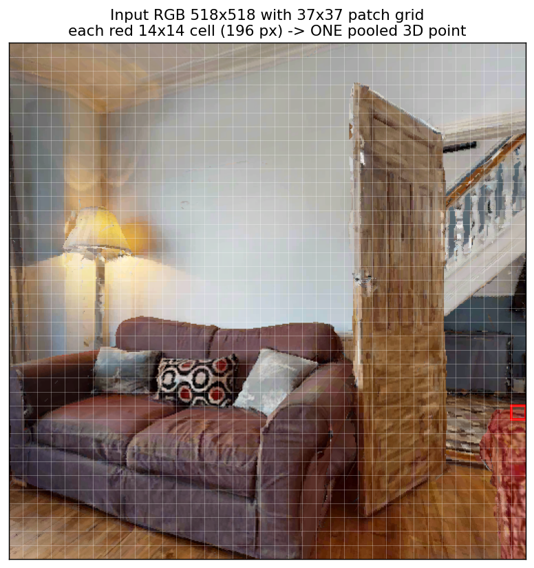
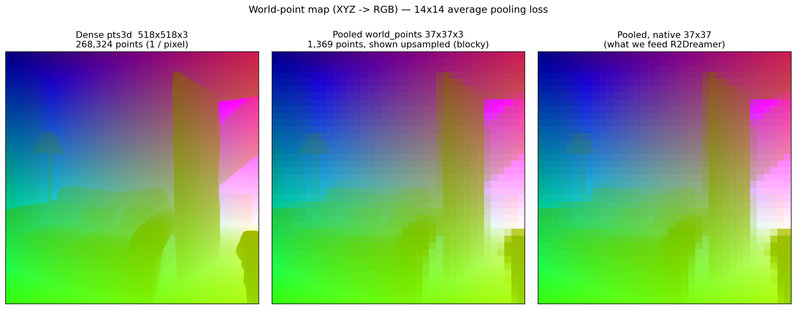
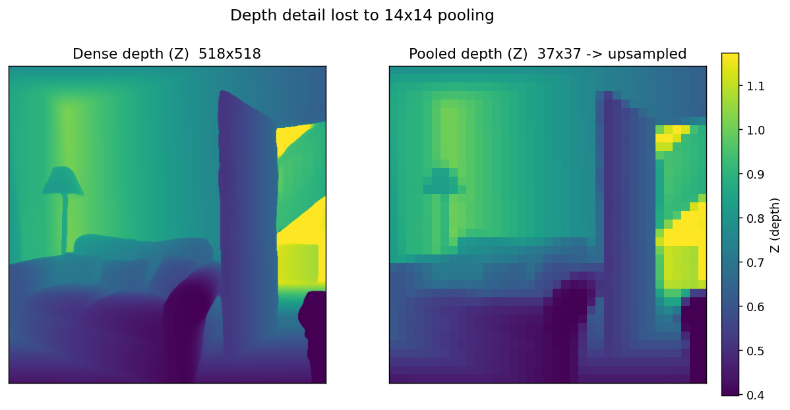
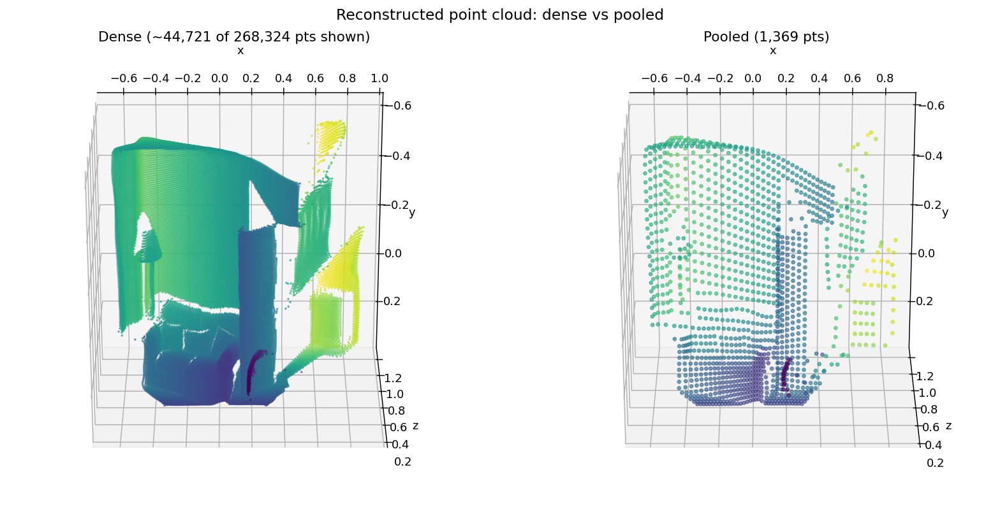
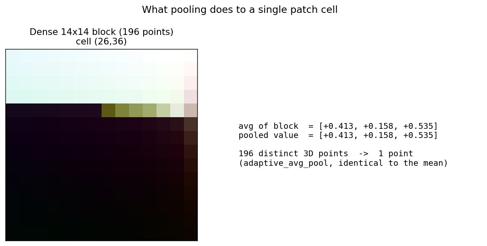

A pair-programming session reconciling our VGGT WP path with the paper. We trace where the size is set, run the model on a real frame to capture the dense map we normally throw away, and visualise exactly what the 14×14 pooling discards.
Both numbers are right — they describe different stages of the same forward pass.
37·37·3 + 9 = 4116 dims.The pooling is exactly the adaptive_avg_pool over each patch cell — we verified pooled == 14×14 mean to 8e-7 on a real frame.
Raised in the supervisor meeting (2026-05-28): our WP readout might not match what VGGT was designed to produce, which would silently weaken the WP/CP baseline that R2Dreamer already depends on.
| Source | Shape | What it actually is |
|---|---|---|
| VGGT paper / DPT head | 512²×3 ≈ 518²×3 | Dense point map — one 3D point per pixel |
| Our WP (fed to R2Dreamer) | 37×37×3 | One 3D point per ViT patch (14×14 px), averaged |
The three possible outcomes were: (a) a bug, (b) an intentional subsample, or (c) a misreading of the paper. The rest of this doc is the evidence that decides between them.
The whole story lives in src/vggt/jax/feature_extractor.py, inside extract(). Three lines matter:
# src/vggt/jax/feature_extractor.py # 1) DPT point head — dense per-pixel map, FULL resolution pts3d, _ = self._point_head_apply(self._pt_params, out_list, images, ...) pts3d = pts3d[:, 0] # (1, 518, 518, 3) ← the paper's map # 2) We collapse every 14×14 patch block to its mean (line 417) world_points = _adaptive_avg_pool_518_to_37(pts3d) # (1, 37, 37, 3) # 3) Only the pooled map leaves extract() (line 444) return {"world_points": world_points_out, "camera_pose": ..., ...}
And the pooling itself — a plain reshape-and-mean over the two 14-pixel axes:
# lines 49–57 — this IS the 196× reduction def _adaptive_avg_pool_518_to_37(pts_nhwc): N, H, W, C = pts_nhwc.shape out = pts_nhwc.reshape(N, 37, 14, 37, 14, C).mean(axis=(2, 4)) return out # (N, 37, 37, C)
Downstream this 37×37×3 is flattened and projected by a single Dense layer:
| File | What it does |
|---|---|
| src/r2dreamer/config.py | vggt_feature_dim = 4116 # 37*37*3 + 9 |
| …/adapters/vggt_adapter.py | flattens world_points + camera_pose → 4116-vector |
| …/world_model/encoders.py | VGGTEncoder: Dense(4116 → 1024) |
What we changed for this investigation. The dense pts3d was a throw-away local — never saved. We added an opt-in return_dense=True flag to extract() that also returns the pre-pool dense_world_points (518×518×3). The default path is byte-for-byte unchanged; parity tests are untouched.
The design note at the top of src/vggt/jax/backbone.py claims the fixed 518×518 input lets us skip DINOv2's positional-embedding interpolation. We checked every clause against the actual checkpoint weights (lch01/StreamVGGT):
| Claim in the Note | Check | Result |
|---|---|---|
| 518 / 14 = 37 exactly | 518 % 14 == 0 | ✓ 37.0 |
| pos_embed has 1 + 37² = 1370 slots | aggregator.patch_embed.pos_embed | ✓ [1, 1370, 1024] |
| patch size 14 (ViT-L/14) | …patch_embed.proj.weight | ✓ [1024, 3, 14, 14] |
fast-path npatch==N && w==h triggers | 1369 patches == 1369 slots | ✓ interpolation skipped is exact |
The Note is correct. Because the input is fixed at the exact resolution the checkpoint was trained on, the bicubic-AA interpolation genuinely degenerates to identity — skipping it is an exact optimisation, not an approximation. The same arithmetic ($$518 = 14 \times 37$$) is also why the pooling target is 37: it is the native ViT patch grid.
We ran the model on a real L1 navigation frame (the chair-only HM3D house, episode_009/step_038 — a living room with a lamp, sofa, and a doorway to a brighter room) and captured both resolutions from the same forward pass. Everything below is real data, not a mock-up.





How much signal is actually lost? Within each 14×14 cell the XYZ standard deviation averages ≈0.013 (X), 0.010 (Y), 0.016 (Z), but spikes to 0.30 in depth at edges — against a scene that spans ~2.1 units. So pooling is near-lossless on flat surfaces and lossy precisely at object boundaries and depth steps like the doorway (Figs 3, 5). The 3.22 MB → 16.4 KB gap is also why naively storing dense WP would blow up the offline buffer ~196× — the trade-off tracked in 3D-53.
Yes — but only at full resolution. A dense WP map is (3, 518, 518) — the exact (C, H, W) layout an RGB frame has. Our existing ConvEncoder (encoders.py:24) already expects (B, C, H, W), so full-res WP can be fed straight in, treating XYZ as a 3-channel image — no new architecture.
At 37×37 it is not worth it: four 2×2 max-pools take 37→18→9→4→2, so almost no spatial structure survives. That tiny grid is exactly why the current code flattens to 4116 and uses a single Dense instead of a conv stack.
This is a genuine architectural fork, so we scoped it out of 3D-48 into a new issue:
| Issue | Title |
|---|---|
| 3D-53 | Full-res world points (518²×3) → feed directly into Conv/CNN encoder (drop flatten+Dense) |
The 37×37×3 is not a bug and not a misreading. VGGT produces the paper-spec dense map inside our code; we deliberately average-pool it 14×14 to keep the R2Dreamer feature small. The recommendation is to document the deviation (this page + a meeting-note line) and keep the current pipeline, unless the WP/CP ablation shows the world model needs finer spatial detail.
Implication for the baseline: the WP/CP numbers are internally consistent — they are not "off-spec VGGT", they are "VGGT + a documented patch-resolution pooling". The honest caveat for the thesis is that our WP is at patch resolution, not pixel resolution.
Per the session decision ("verify more first"), this verdict is now backed by the real-frame evidence above. Final call is yours to confirm with the supervisors — the figures are appendix-ready.
sbatch scripts/vggt/dump_wp_dense_vs_pooled.sbatch
# → output/3d48/wp_dense_vs_pooled.npz (dense 518², pooled 37², input RGB)
.venv/bin/python -m visualizations.wp_dense_vs_pooled_figs \
--npz output/3d48/wp_dense_vs_pooled.npz \
--outdir docs/images/3d48
docs/images/3d48/ is appendix-ready; this page embeds them. The dense NPZ is portable to your laptop for an interactive viewer if desired.Artifacts: scripts/vggt/dump_wp_dense_vs_pooled.py · scripts/vggt/dump_wp_dense_vs_pooled.sbatch · visualizations/wp_dense_vs_pooled_figs.py · capture flag in src/vggt/jax/feature_extractor.py.
| Decision | Choice | Why |
|---|---|---|
| How to get the dense map | SLURM GPU job | Real same-input comparison; dense map is never saved otherwise |
| Issue verdict | Verify first → intentional subsample | Wanted real-frame evidence before committing |
| CNN / full-res idea | New issue 3D-53 | Architectural fork, out of 3D-48's diagnose-and-document scope |
| Branch vs worktree | Branch in this checkout | Reuse the CUDA venv + cached checkpoint; avoid re-setup |
| Notebook vs script | Plain Python (+ sbatch) | Headless GPU run + reproducible CLI; matches repo conventions |